Physics Balls
Ball and paddle motion, contact with a brick field, and a visibly changing playfield.
Explore the game ↗C++ · Object-oriented programming · 2021
C++ mini games · Physics Balls, Tetris, and Reversi
I independently developed three C++ object-oriented course projects, connecting game rules, changing state, and visible player feedback. Original recordings preserve Physics Balls, Tetris, and Reversi running inside their development environment.
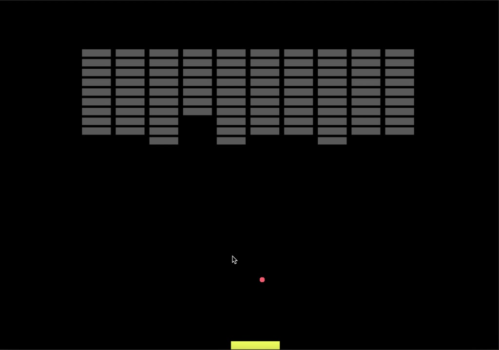
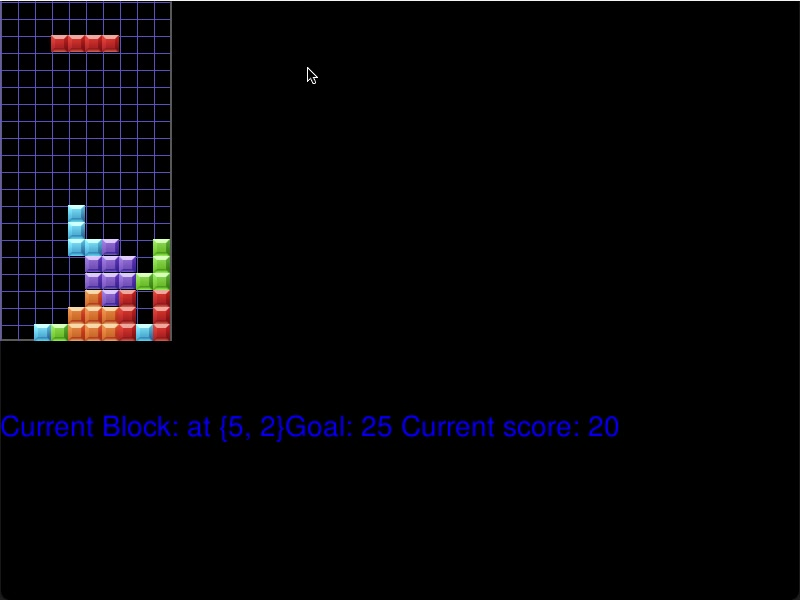
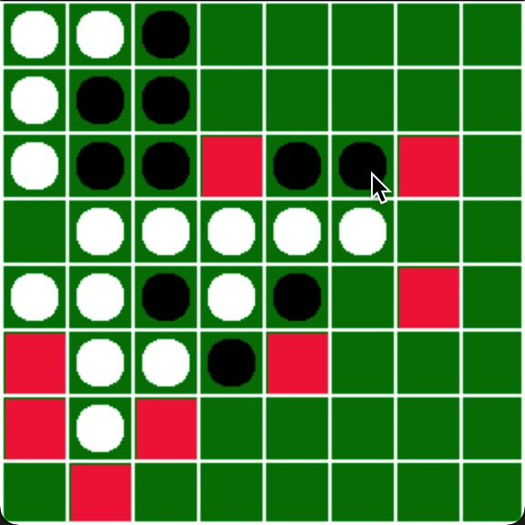
01 · Three programming briefs
These projects gave me three compact settings for object-oriented programming: continuous motion in a brick-breaker, a changing arrangement of pieces on a grid, and a turn-based board game. In each, an input has to produce a valid change in program state and a visible response.
Ball and paddle motion, contact with a brick field, and a visibly changing playfield.
Explore the game ↗Grid-based piece placement, changing board state, and position, goal, and score feedback.
Explore the game ↗A turn-based board game with black and white discs, highlighted cells, move feedback, and an explicit end-of-game message.
Explore the game ↗02 · Motion, contact, and changing geometry
A pink ball, a yellow paddle, and a field of gray bricks make the program’s state visible. As the player moves the paddle and the ball travels through the field, bricks disappear and the next interaction takes place in a changed scene.
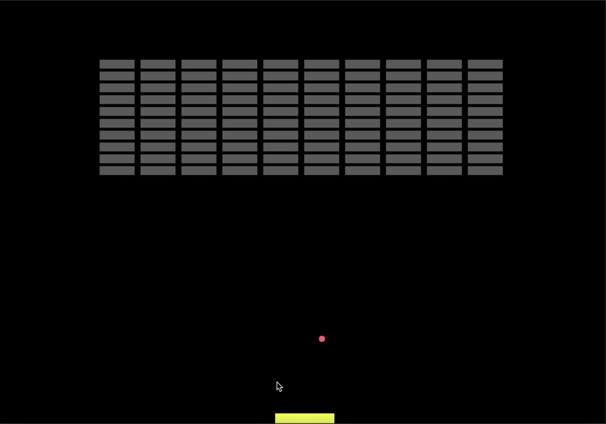
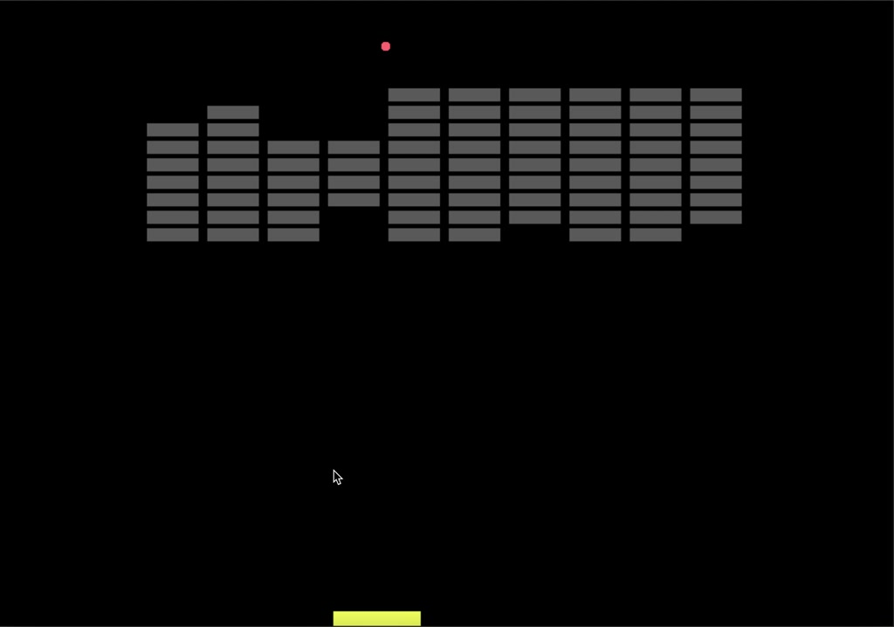
03 · Discrete state, placement, and explicit progress
Colored pieces move within a visible grid while the interface reports the current block position, a goal, and the score. The recording progresses from a sparse board to a larger arrangement and ends with an explicit “You Win!” message.
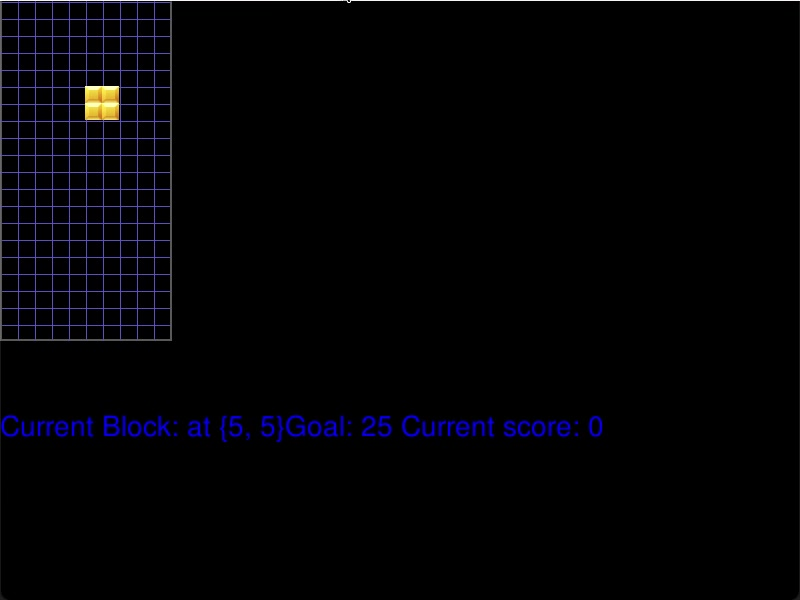
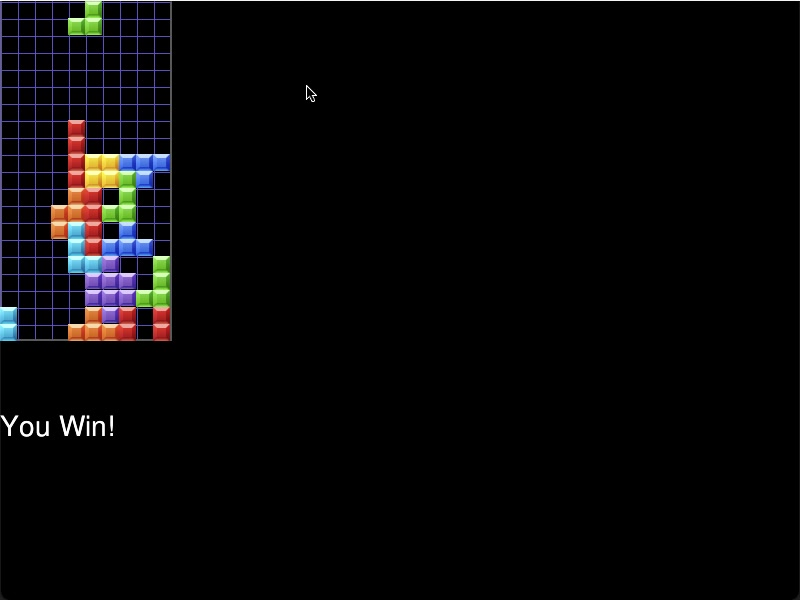
04 · Turn-based board state and move feedback
Black and white discs occupy an 8×8 green board, with red cell highlights providing feedback as the game develops. The original recording shows successive moves, a changing balance of discs, and a final “Light Win!” / “Game Over!” overlay. The uncropped development recording also preserves “unavailable move!” messages in the console.
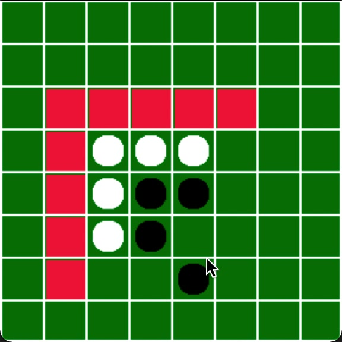
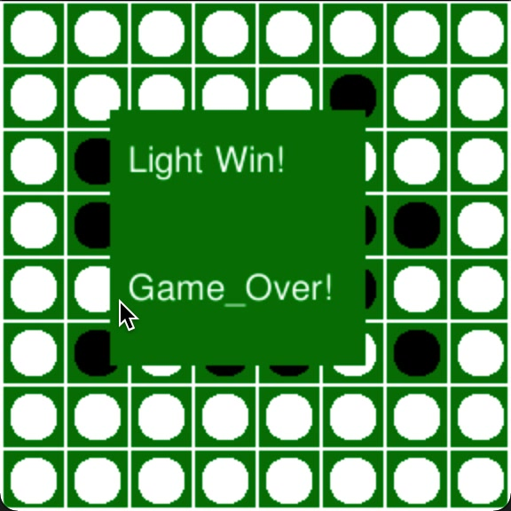
05 · Implementation structure
The Physics Balls and Tetris recordings preserve project trees with model, view, and controller source/header files. Physics Balls also exposes a ball component and ball/model test files; Tetris shows a character component, an entry point, and a CMake project file. Reversi adds a board component alongside model and controller files, with a visible Model::really_play_move_ method label. The Tetris application runs in a window labeled GE211.
Module names visible in the original recording:
ball.cxx / ball.hxxmodel.cxx / model.hxxview.cxx / view.hxxcontroller.cxx / controller.hxxball_test.cxxmodel_test.cxx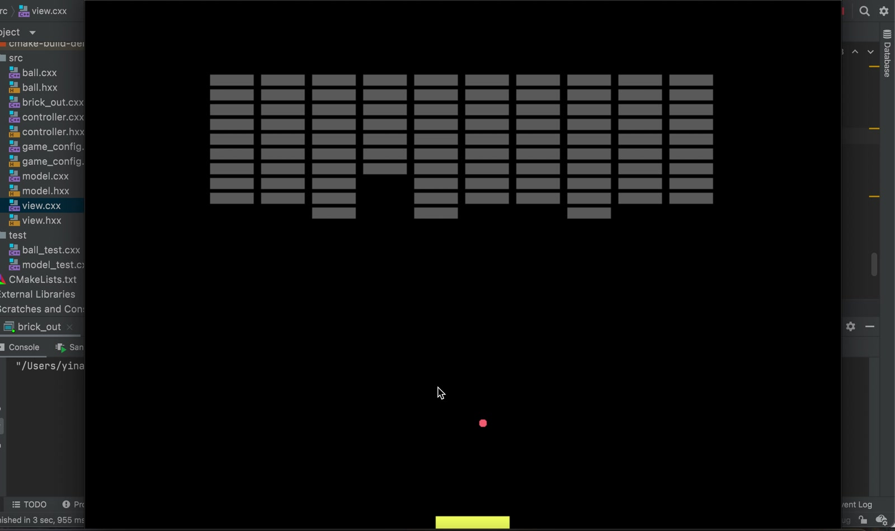
Module names visible in the original recording:
character.cxx / character.hxxmodel.cxx / model.hxxview.cxx / view.hxxcontroller.cxx / controller.hxxmain.cxxCMakeLists.txt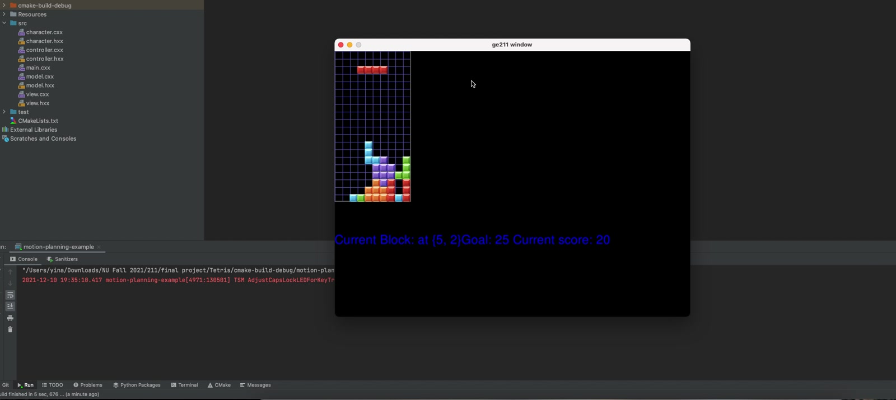
Module names visible in the original recording:
board.cxx / board.hxxmodel.cxx / model.hxxcontroller.cxx / controller.hxx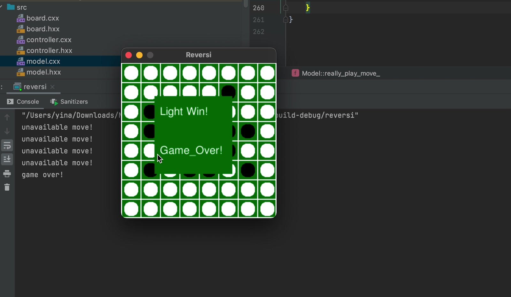
Physics Balls couples the ball’s changing position with contact, paddle movement, and brick removal. A change in the model has to remain visible in subsequent frames.
Tetris connects a piece’s grid position with the accumulated arrangement and the interface’s goal and score readout. The final message makes the completed session explicit.
Reversi connects a requested move to the current board, the updated disc arrangement, and the feedback that follows. The full recording preserves unavailable-move messages and a clearly labeled final outcome.
The common engineering problem is keeping input, rules, and rendering in agreement. A visible object or status line should communicate the state the program is actually using.
06 · My contribution & outcomes
I completed the three C++ object-oriented course projects independently. My work connected gameplay and state logic with the input and rendering needed to make each program interactive.
The three retained recordings show playable versions of all three projects: the changing brick field in Physics Balls, a completed Tetris session, and a Reversi match ending with a win and game-over message. They also preserve the development environment and module organization.
I still value the small feedback loop these games make concrete: a person acts, the system changes, and the interface makes the consequence understandable. That attention to visible state continues to inform my work on interaction design and embodied systems.
07 · Original materials
0:46 · original gameplay session
1:26 · original gameplay session
1:12 · original gameplay session
The videos on this page preserve the complete recorded sessions, cropped to their game windows and encoded for browser playback. The Drive links retain the original screen recordings. Game screenshots are frames from those recordings; no gameplay has been reconstructed.
The earlier portfolio records all three projects in the Northwestern C/C++ object-oriented coursework archive. The Tetris recording contains a December 2021 development timestamp, so this page groups the material as 2021 coursework. The board-game recording identifies the third game as Reversi. The recovered materials preserve file names and running behavior, but do not include source-code contents.

I independently combined a dancing 3D animation, a Unity interface, and an iPad projection pyramid. Moving from animation to a physical display meant designing both the digital material and the way a person would encounter it in space.
Independent creator: 3D animation, interface design, and projection setup
Explore the project
I worked across camera, sound, directing, interviewing, and editing in ZJNU studio productions, then interviewed doctors and edited episodes at Sichuan Radio and Television. The subjects ranged from cultural heritage to graduate employment and financial scams. My responsibilities varied by assignment, linking field recording with the construction of a narrative.
Camera, sound, directing, interviewing, and editing across different assignments; television interviewer and editor
Explore the project